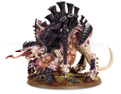
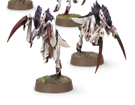

泰伦虫族
泰伦虫族是来自来自银河之外的吞噬者，他们存在的目的就是吞噬一切来满足自己永无止境的饥饿，因而它们是一切生命的死敌，在人类帝国的星球——泰伦被它们吞噬之后，人们便用泰伦来称呼这种生物。泰伦虫族有着极高的生物科技，它们可以根据实际情况改变自己，从而获得战略优势。

母虫：枪虫个体战力的不高，所以损耗颇高，而其战力的发挥需要庞大的数量来支持，所以诞生了母虫，母虫一般为战场上的枪虫补充兵力并且作为虫巢意志的中继站，保证枪虫战力的有效发挥。

刀虫/枪虫： 泰伦虫族最基础的单位，个体的战斗力不高，但在泰伦虫族的进攻中其数量极其庞大，如同潮水一般涌像敌人，且速度极快。